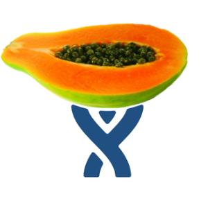

<app-menubar></app-menubar>
<p-toast position="top-center"></p-toast>
<p-card header="Konfiguracja Jiry 3">
  <div class="ui-g">
    <div class="ui-g-8 ui-g-nopad">
      <div class="ui-g-12">
        <h6>Dostępne boardy:</h6>
        <p-table [value]="jiraBoards">
          <ng-template pTemplate="header">
            <tr>
              <th>Nazwa projektu</th>
              <th>Klucz projektu</th>
              <th>Nazwa boardu</th>
              <th>Typ boardu</th>
            </tr>
          </ng-template>
          <ng-template pTemplate="body" let-board>
            <tr class="highlight-on-hover-content clickable" (click)="handleClick(board)">
              <td>{{board.projectName}}</td>
              <td>{{board.projectKey}}</td>
              <td>{{board.boardName}}</td>
              <td>{{board.boardType}}</td>
            </tr>
          </ng-template>
        </p-table>
      </div>

      <div class="ui-g-12">
        <p-button label="Cofnij" icon="pi pi-arrow-left"
                  [routerLink]="['/projects/jira-config']" class="mr-2">
        </p-button>
      </div>
    </div>
    <div class="ui-g-4 ui-g-nopad">
      <div style="display: flex; justify-content: center">
        
      </div>
    </div>
  </div>
</p-card>
